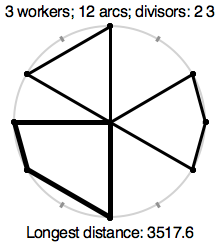
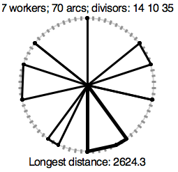
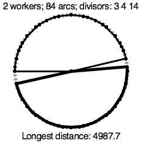

| Source file: | shrine.{c, cpp, java} |
| Input file: | shrine.in |
A religious sect has holy sites with shrines placed around a circle of radius 1000. The circle is split into N equal length arcs and the endpoints are numbered in order, 1 through N. The first figure shows a circle where N is 12, with 12 gray tick marks like on a 12-hour analog clock. We can imagine the marks numbered, as on a clock, with 12 at the top. Each circle has one or more sacred numbers associated with it. The sacred numbers for the circle in the first figure are 2 and 3. A shrine, indicated by a black dot in the figure, is placed at each mark whose number is a multiple of at least one of the sacred numbers, so in this case the shrines are at positions 2, 3, 4, 6, 8, 9, 10, and 12.
|  |
 |
 |
| Figure 1 | Figure 2 | Figure 3 |
When it comes time to inspect and repair the shrines at a given
site, the area is closed and a team of workers simultaneously fan out
from a maintenance shed, located in the center of the circle, so that
each shrine is visited by at least one worker. Once all workers have
returned to the shed, the site is reopened to the public. Because
these sites are in great demand, it is important that they be closed
as briefly as possible. In order to minimize this time, they
must figure out how to apportion the shrines among the current
number of workers, so the maximum distance traveled by any one worker
is as small as possible. Figure 1 shows one choice for the optimal solution paths for 3
workers. The lower left path has darker lines, to indicate that it is one
with the longest length, which in this case is approximately 3517.6.
This sect has many circular sites with multiple shrines. The number of available workers at a site, W, the value of the number equal arcs, N, and the sacred numbers vary between sites. The sacred numbers are always divisors of N. Your job is to help figure out how much time is required for maintenance. Figures 2 and 3 show optimal solutions for other sites.
Input: The input consists of one or more data
sets. Each data set is on a single line and consists entirely of
positive integers. The first three entries are W, the number of
workers, N, the number of equal arcs around the circle, and D, the
number of sacred divisors of N. At the end come the D divisors of
N. W is no more than the total number of shrines;
A single zero, 0, will be placed on the last line to indicate the end of the input.
Output: The output is a single line for each dataset: the maximum distance a worker must travel with an optimal assignment of the shrines. This number is displayed so that it is rounded to one decimal place, and always shows that decimal place, even if it is 0. To ensure unique answers with double arithmetic, the datasets are chosen so that if your answer is anywhere within .005 of the exact minimum distance, then the answer rounded to one decimal place will be the same.
The first three sample datasets correspond to the three figures.
Caution: Be careful with your algorithm so it finishes rapidly.
| Example Input: | Example Output: |
| 3 12 2 2 3 7 70 3 14 10 35 2 84 3 3 4 14 4 35 2 7 5 3 20 2 5 4 3 6 1 1 4 6 1 1 1 6 1 1 8600 8600 3 1 10 100 0 |
3517.6 2624.3 4987.7 3224.9 3488.4 3000.0 3000.0 7000.0 2000.0 |